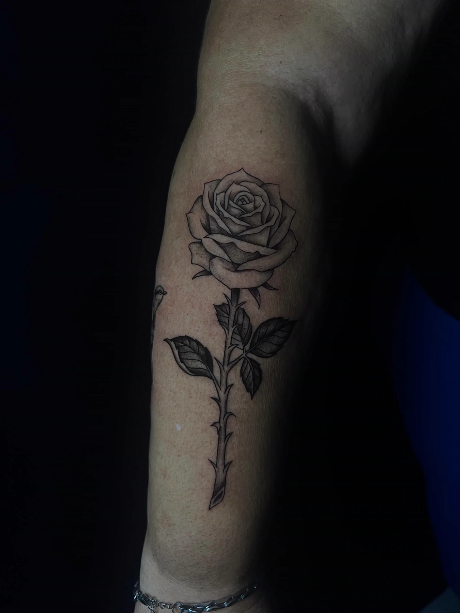

Início › Artigos › Planejamento
PlanejamentoO que perguntar ao tatuador antes de marcar
Dez perguntas que separam uma boa experiência de uma dor de cabeça — e os sinais de que é melhor procurar outro estúdio.

Primeira ou décima tatuagem, uma boa sessão começa com uma boa conversa. Tatuagem é pra vida toda — vale perguntar antes o que quer que seja. Um tatuador sério não se incomoda; pelo contrário, gosta de cliente que chega informado.
1. Você já fez trabalhos parecidos com o que eu quero?
Cada tatuador tem pontos fortes. Peça pra ver trabalhos no mesmo estilo e tema da sua ideia — não só os melhores do Instagram. E, se possível, fotos cicatrizadas: tatuagem recém-feita sempre parece mais bonita do que vai ficar.
2. Qual o tamanho mínimo pra essa ideia?
Detalhe demais em espaço pequeno borra com os anos. Um bom tatuador vai ser honesto sobre o tamanho necessário pra sua tatuagem envelhecer bem, mesmo que isso mude o que você tinha em mente.
3. Em que lugar do corpo ela fica melhor?
Algumas imagens pedem área plana; outras acompanham bem uma curva. A região também muda a dor e a cicatrização. Se ainda está em dúvida, veja o ranking de dor por região.
4. Quanto custa e o que está incluso?
Pergunte o valor total, se há sinal pra reservar a data, o que acontece com o sinal se você precisar remarcar e se existe retoque depois da cicatrização — e em que condições. Tudo combinado antes evita surpresa.
5. Vai sair em uma sessão?
Peças grandes podem sair numa sessão longa ou ser divididas. Pergunte quantas sessões são previstas, quanto tempo cada uma dura e como fica o pagamento entre elas. Tem uma explicação completa em quantas sessões leva uma tatuagem grande.
6. Como é a biossegurança?
Essa é a pergunta mais importante pra sua saúde. O que você deve ver:
- Agulhas e cartuchos descartáveis, abertos na sua frente.
- Tinta em recipiente descartável, individual pra cada cliente.
- Luvas trocadas sempre que necessário.
- Superfícies e máquina protegidas com filme plástico.
- O que não é descartável, esterilizado.
7. Posso ver o desenho antes?
Pode e deve. Você precisa ver a arte e, no dia, o stencil aplicado na pele, pra conferir posição e tamanho no espelho. Se algo não te convencer, é a hora de ajustar.
8. Como devo me preparar?
- Dormir bem na noite anterior
- Comer de verdade 1 a 2h antes
- Beber água
- Ir com roupa que deixe a região livre
- Álcool nas 24h anteriores
- Chegar em jejum
- Pele queimada de sol ou machucada
- Tatuar com dúvida ou pressa
9. Como são os cuidados depois? Você acompanha?
Todo tatuador sério passa as orientações de cicatrização — e se coloca à disposição se algo parecer estranho. Se ele não fala nada sobre isso, é sinal de alerta. O passo a passo está em como cuidar da tatuagem nos primeiros 15 dias.
10. Posso trazer uma referência?
Pode. A maioria das tatuagens nasce de uma imagem que o cliente salvou. O trabalho do tatuador é adaptar essa referência pro seu corpo: proporção, posição e traço. Pergunte como ele faz essa adaptação e se você aprova antes.
Sinais de alerta: não mostra portfólio; não fala de tamanho; pressiona pra fechar na hora; preço muito abaixo do normal; material aberto antes de você chegar; nenhuma orientação de cuidado. Em qualquer um desses, vale procurar outro estúdio.
Comigo, como funciona
Você manda a referência, o tamanho aproximado e o local pelo WhatsApp. Eu respondo suas dúvidas, digo o tamanho que funciona e passo o orçamento — os trabalhos começam a partir de R$ 100. A data é confirmada com sinal, eu atendo um cliente por dia e acompanho sua cicatrização depois.